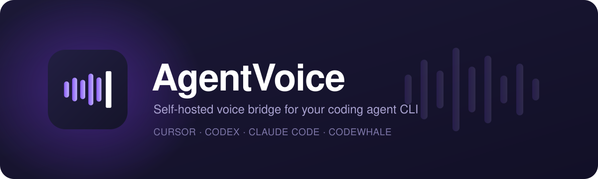

Self-hosted · open source · MIT
Talk to your coding agent
from your phone.
AgentVoice is a self-hosted voice bridge for the agent CLI you already use: Cursor, Codex, Claude Code or Codewhale. Speak from the iPhone app or the web app, and the agent on your own machine does the work in your repos.
npm install -g @ratitisrad/agentvoice
How it works
The bridge runs on your machine. Your agent CLI does the thinking.
It connects to the bridge through an MCP server called agent-voice, which gives it tools to
wait for your next request (next_voice_turn), answer out loud (speak) and finish a turn
(done). Coding work goes to worker agents started with spawn_agent.
- 1 · You Phone iPhone app with CallKit, or the PWA in any browser
-
2 · Your machine
AgentVoice bridge
Speech in and out, pairing token, MCP server
agent-voice -
3 · Reasoning
Your agent CLI
cursor-agent,codex,claudeorcodewhale - 4 · Work Workers → your repos Worker agents edit, test and commit in your git projects
Turns recommended
Say the wake phrase, speak, pause. Voice activity detection closes the turn and the whole request goes to the agent at once. This is the default.
Direct audio stream
Stream audio continuously from the phone, or pipe PCM from any source. The bridge cuts it at your pauses and hands each piece to the agent while you talk.
arecord -f S16_LE -r 16000 -c 1 -t raw | agentvoice pipeFeatures
-
Four agent CLIs
Cursor (
cursor-agent), Codex, Claude Code and Codewhale. Models, effort levels and speed tiers are read from the CLI itself. If a CLI needs you to sign in, the app asks you right there. -
Speech in, your way
Browser, a self-hosted Whisper container, Groq, OpenAI, Deepgram, Gemini, ElevenLabs, OpenRouter or Amazon Transcribe, in an ordered fallback chain.
-
Speech out, per language
Browser, a local Kokoro voice, ElevenLabs, OpenAI, Gemini, Deepgram, Groq or Polly. A provider that can't speak a language is skipped, so each reply goes to one that can.
-
Reach it from anywhere
Tailscale by default. Cloudflare Tunnel, ngrok, Azure Dev Tunnels, plain LAN or your own reverse proxy also work, set up in one click from Config → Serve → Network.
-
Self-hosted and private
Everything runs on your host, and your phone pairs with a token. With Whisper and Kokoro, audio never leaves your machine. A fresh install listens only on
127.0.0.1. -
Throwaway instances
agentvoice local --this-dirstarts a temporary bridge and web client for one directory, with logs in the terminal. It saves nothing and leaves your main bridge alone. -
Project discovery
Git repositories under
~/Projects(or any folders you choose) are picked up automatically.agentvoice add --this-dirregisters anything else, filling in the details from the repo. -
Logs and transcripts
Each bridge run writes a dated session log and each voice session writes a transcript, gzipped as they pile up.
agentvoice logs -ffollows them live. -
Status and doctor
agentvoice statusshows the install, version, service, port, health and public URL on one screen.agentvoice doctorchecks Node, config, the agent CLI and its sign-in, the port and hosting.
Install
You need one agent CLI on your PATH (cursor-agent,
codex, claude or codewhale). The npm install also needs
Node.js 20 or newer. Every install method runs the same agentvoice setup wizard.
npm Linux, macOS, Windows
-
Install the
agentvoicecommand. The bridge and the built web app come in one package, with no checkout and no build step.npm install -g @ratitisrad/agentvoiceA global install also registers and starts a background user service (systemd on Linux, launchd on macOS), so the bridge is running at
http://127.0.0.1:5089right away and starts again at every login. It listens on this machine only until you set up hosting. To skip the service, setAGENTVOICE_NO_SERVICE=1when you install:AGENTVOICE_NO_SERVICE=1 npm install -g @ratitisrad/agentvoiceOn Windows, or if npm is set to ignore install scripts, run
agentvoice service install --nowonce instead. Before you uninstall the package, runagentvoice service uninstall. -
Run the setup wizard. It asks which agent CLI to use and where your repos are, then sets up hosting (Tailscale, Cloudflare Tunnel, ngrok, Dev Tunnels or LAN) so your phone can reach the bridge.
agentvoice setup -
Get your pairing token.
agentvoice token -
Open the app and pair. Open
http://127.0.0.1:5089on this machine, or the public URL fromagentvoice statuson your phone. Paste the token when asked.
Your settings, database and logs live in ~/.agentvoice (or $AGENTVOICE_HOME),
so updating the package never touches your data. agentvoice update installs the newest version.
Debian / Ubuntu apt
Signed amd64 and arm64 packages come from this site. After that, updates arrive with the rest of your
system through apt upgrade.
sudo install -d -m 0755 /etc/apt/keyrings
sudo curl -fsSL https://dixonsolutions.github.io/AgentVoice/agentvoice.asc -o /etc/apt/keyrings/agentvoice.asc
sudo curl -fsSL https://dixonsolutions.github.io/AgentVoice/apt/agentvoice.sources -o /etc/apt/sources.list.d/agentvoice.sources
sudo apt update && sudo apt install agentvoiceThe package enables the background user service automatically. Next, run the wizard and get your pairing token:
agentvoice setup
agentvoice tokenThe signing key is trusted only for this repository (signed-by) and is never added
system-wide. Public key · apt source file ·
published versions.
To keep the bridge running after you log out, run loginctl enable-linger "$USER".
Fedora / RHEL dnf
Signed x86_64 and aarch64 packages. dnf checks both the repository metadata and every package, and asks you to confirm the key's fingerprint the first time.
sudo curl -fsSL https://dixonsolutions.github.io/AgentVoice/rpm/agentvoice.repo -o /etc/yum.repos.d/agentvoice.repo
sudo dnf install agentvoiceThe package enables the background user service automatically. Next, run the wizard and get your pairing token:
agentvoice setup
agentvoice tokenRepo file · public key ·
published versions.
Updates come with sudo dnf upgrade. To keep the bridge running after you log out, run
loginctl enable-linger "$USER".
From source git clone
For hacking on AgentVoice itself. scripts/setup.sh installs dependencies, builds, and then
runs the same agentvoice setup wizard.
git clone https://github.com/dixonSolutions/AgentVoice.git
cd AgentVoice
bash scripts/setup.shOn Windows, run .\scripts\setup.ps1 in an elevated PowerShell instead.
Already have a clone with its own config? Once you have the npm package,
agentvoice migrate ~/Projects/AgentVoice copies its config.json and keys
into ~/.agentvoice.
Next steps: the agentvoice command
Running agentvoice with no command starts the bridge. The same command also
manages your install. Add --help after any command to see its options.
| Command | What it does |
|---|---|
agentvoice setup | Guided setup: keep or install the background service, agent CLI and projects, then hosting such as Tailscale |
agentvoice status | Install, version, service, port, health and public URL on one screen (--json for scripts) |
agentvoice doctor | Checks Node, the native binding, config, the agent CLI and its sign-in, the port, the service and hosting |
agentvoice logs -f | Follows the service journal or session log (--list shows every log and transcript) |
agentvoice add --this-dir | Registers the current directory as a project |
agentvoice local --this-dir | Starts a throwaway bridge and web client for just this directory. Nothing is saved |
agentvoice migrate <path> | Copies a clone's config.json and .env into this install's home |
agentvoice service install | Installs or reinstalls the background service (systemd, launchd or a Windows service). --now also starts it |
agentvoice service uninstall | Stops and removes the service, for example before npm uninstall -g |
agentvoice start | stop | restart | Controls the background service |
agentvoice pipe --mic | Talks to the agent from this terminal, no phone needed |
agentvoice update | Updates the install the way it was installed (npm, clone, or the apt / dnf command to run) |
agentvoice token --new | Replaces the pairing token with a new one |
Full reference: docs/35: the agentvoice CLI.